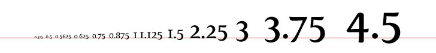

The Archive styles use ems to size text and most elements, and to specify margins and padding.
The em is a sliding measure. One em is a distance equal to the type size. In 6 point type, an em is 6 points; in 12 point type an em is 12 points and in 60 point type an em is 60 points. Thus a one em space is proportionately the same in any size.
-Robert Bringhurst
Mr. Bringhurst is talking about ems in terms of points, a unit of measure more appropriate for print than screen. But ems are flexible, so Mr. Bringhurst's definitionexplanation is equally true if we change from points to to pixels, which are the unit of measure web browsers use for text size:
In 6 pixel type, an em is 6 pixel; in 12 pixel type an em is 12 pixels and in 60 pixel type an em is 60 pixels. Thus a one em space is proportionately the same in any size.
The default font size on most web browsers is 16 pixels [1], which means the default size of 1em is 16 pixels. If the only declaration block in your stylesheet is p { margin: 2em 1em; }, your paragraphs will have 16px text with a 32px margin at the top and bottom and a 16px margin at the left and right.
Of course, it's possible to change a browser's default settings. A visitor with a visual impairment might have their browser's font size set to 20px. They'll see the paragraphs with 20px text, 40px top and bottom margins, and 20px left and right margins -- the same proportions as you, but in a size that works better for them.
To ensure that all browsers can properly display, resize, and zoom on our text, the first thing we do when working with ems is set the body font size to 100%, or the default font size for the user's web browser:
body {
font: 100%/1.125 'Lucida Grande', 'Lucida Sans Unicode', 'GNU Unifont', Verdana, Helvetica, sans-serif;
}.font-size PropertyEms aren't just affected by the browser's default font size. They're also affected by the font sizes set in your stylesheet. For example, if you changed the declaration block from the previous section to p { font-size: 20px; margin: 2em 1em; }, everyone would see 20px text with 40px top and bottom margins and 20px left and right margins.
However, we never use pixels to set font-size in our stylesheeets. Doing so would override a visitor's default browser settings. While we intended to make the paragraph text bigger than usual by setting it to 20px, a visitor whose browser's default is 24px will instead be seeing text that is smaller than usual.
font-size in EmsInstead of setting an absolute font size, ask yourself what you're really trying to do. Are you trying to make the text bigger or smaller than it would normally be? In practice, this should depend on whether the text is more or less important than the main paragraph text. In the example above, we're trying to make it bigger. How much bigger? If you divide the size you want the text to be (20px) by the size the text is (16px), you'll find out how many ems your font-size should be.
In this case, 20 divided by 16 gives us 1.25. Setting the font-size of p to 1.25em will make the font bigger for everyone: 20px for anyone with a default of 16px, and 25px for anyone with a default of 20px.
There's no need to adjust the margins. Browsers will recalculate margin: 2em 1em based on the new font size, so the user who is now seeing 20px text will see 40px top and bottom margins while the user who is seeing 25px text will see 50px top and bottom margins -- still twice the size of the text.
An element's em scale is also affected by the font size of its parent elements. What happens if a <p> element with the style color: blue; font-size: 1.25em; margin: 2em 1em is the child of a <div> with the style color: green; font-size: 1.5em?
We know that setting the child element's color will override the parent's and give us a paragraph of blue text, but ems work differently. The browser won't ignore that font-size: 1.5em from our div. Instead, it will apply the paragraph's font-size: 1.25em on top of it.
First, the browser will calculate the size of the div's text to be 1.5 times the size of the default font. Then it will calculate the paragraph text to be 1.25 times the size of the div's font size. So, a visitor with a default font size of 16px will see the div text at 24px and the paragraph text at 30px. The top and bottom margins would be 60px and the side margins would be 30px.
The standard scale for font sizes is 8, 9, 10, 12, 14, 16, 18, 24, 36, 48, 60, 72. Assuming that most people are browsing with a default font size of 16px, here is how those font sizes would be expressed in ems:

Almost all of the Archive's content is inside #main, a div where the font size is set to 0.875em, which is 14px on web browsers with a default font size of 16px. This means that any element that is a direct child of <div id="main"> should have its em scale calculated as if 1em were equal to 14px. Here is how the standard font scale would be expressed in ems. Numbers have been rounded to three decimal places:
It can be a bit difficult to get your head round using ems for margins and padding, so here are some tips:
#main is 0.875em/1.286, margin: 0.643em auto; gives you a single blank line (approximately 9px) between block elements.